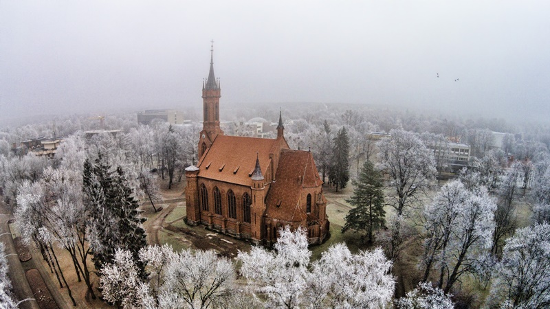

Druskininkų kurortas turtingas savo istorija, gamta ir žmonėmis. Visais metų laikais čia jaučiama harmonija ir ramybė, kurios trūksta didesniems miestams. Dažnas atvykstantis į Druskininkus įsimyli šią vietovę ir svajoja likti čia visam gyvenimui. „Vieta, kur norisi sugrįžti“, „Atradimų miestas“, „Poilsis sielai“, „Lietuvos perlas“, – sako apie Druskininkus nuolatiniai svečiai. Jeigu Jūs irgi pamilote kurortą ir norėtumėte pažinti jį iš arčiau, kviečiame į nuostabų žiemos žygį.
